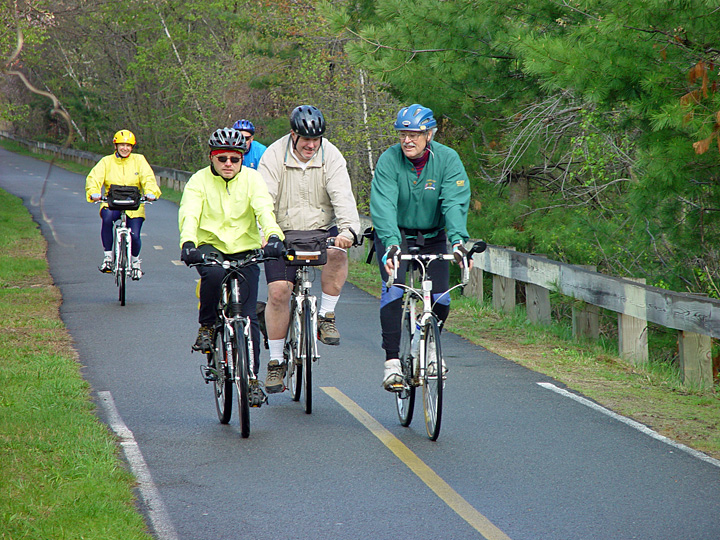
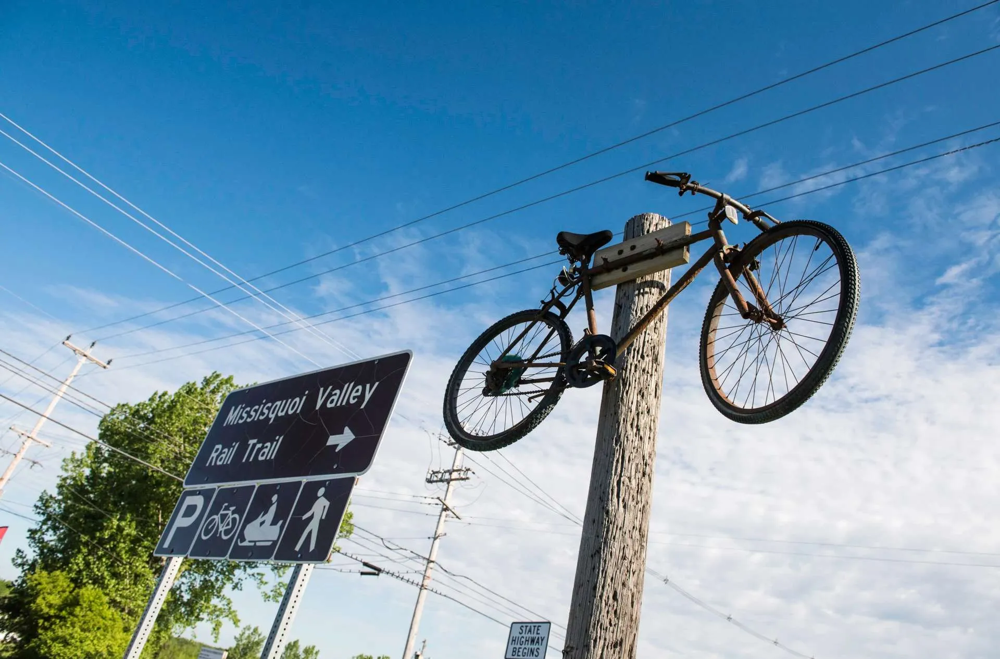
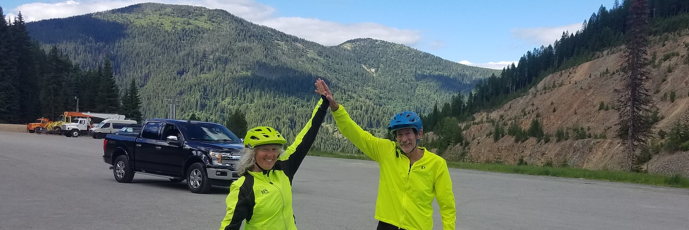

Gain valuable insights into America's rail trail statistics, including the number of available rail trails and their respective lengths in each state. This dashboard offers information about the most bike-friendly infrastructures in the United States.
Rail trails are flat or gently sloping paths open to people but not cars. They follow the lines of old, abandoned railroad tracks, and often connect interesting towns and historical sites.
Featured Trail: Bedford Rail Trail
Find Your Route: Here are ten amazing rail trail experiences in the United States that are part of Adventure Cycling Association's route network.
Featured Trail: Vermont Rail Trails
Great American Rails Trails: Imagine yourself pedaling across the entire country on a safe and scenic pathway on a local trail that connects along historic routes. The Great American Rail-Trail is the nation’s first cross-country multiuse trail, stretching more than 3,700 miles between Washington, D.C., and Washington State. This is an iconic American infrastructure that will connect thousands of miles of rail-trails.
Great American Rails Trails: Get Involved